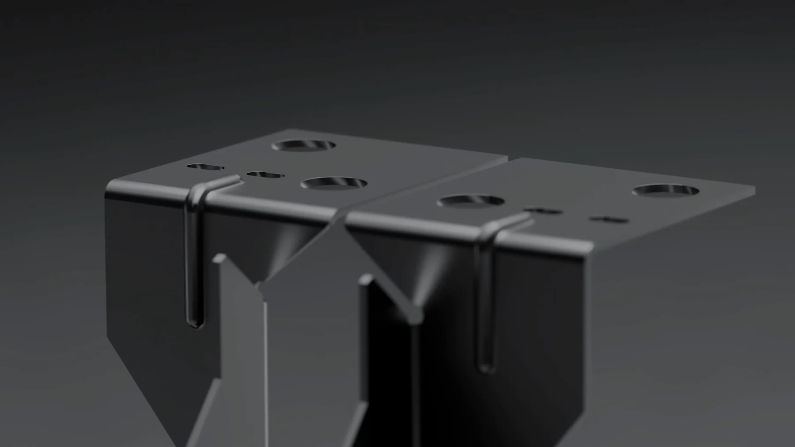

Kèm riêng dựng hình sản phẩm: học gì, bao lâu

Kèm riêng dựng hình sản phẩm là hình thức học kèm một thầy một học viên, lấy đích đến là một ảnh sản phẩm dùng được chứ không phải lấy đích đến là học hết một giáo trình. Mỗi buổi mở đúng file bạn đang dựng, sửa chỗ sai ngay trong file đó, rồi giao việc cho tuần sau. Nó đáng tiền khi bạn đã dựng được vài thứ nhưng ảnh ra vẫn nhìn ra là hình 3D.
Bài này nói rõ một chương trình kèm riêng dạy những gì, chu kỳ kèm chia theo tuần trông thế nào, cách kiểm tra người nhận kèm trước khi trả tiền, và ba tình huống chúng tôi khuyên bạn chưa nên thuê ai cả. Chúng tôi không nêu mức giá cụ thể, vì giá thay đổi theo thời điểm và theo việc buổi học có chữa file thật hay chỉ xem bài giảng.
Kèm riêng dựng hình sản phẩm là gì
Điểm khác biệt không nằm ở số người trong lớp. Nó nằm ở thứ được coi là đầu ra của buổi học.
Lớp nhóm lấy giáo trình làm đầu ra
Một lớp dựng hình sản phẩm bình thường kết thúc khi đi hết các chương: khối, vật liệu, ánh sáng, kết xuất. Mẫu tập là mẫu chung, ai cũng dựng cùng một chai nước hoặc cùng một hộp bao bì. Bạn ra khỏi lớp với nhiều kỹ năng rời và thường chưa có ảnh nào của riêng mình đủ sạch để đưa cho khách.
Kèm riêng lấy món bạn đang dựng làm đầu ra
Buổi đầu thường không dạy gì. Buổi đầu là ngồi chọn món và chốt góc ảnh. Từ buổi hai trở đi, mỗi buổi đều đẩy món đó tiến một bước: hôm nay sửa tỉ lệ, tuần sau sửa bề mặt kim loại, tuần sau nữa sửa hướng đèn. Kỹ thuật được dạy khi món cần tới, không dạy trước.
Đây cũng là nhược điểm thật của hình thức này, cần nói ngay: bạn học hẹp. Nếu muốn nền tảng rộng và có nhịp lớp, một chương trình có bài tập theo tuần phục vụ bạn tốt hơn, và hai hệ ở trang khoá học 3D Blender ghi rõ đầu ra từng tuần để bạn tự so.
Một chương trình kèm riêng dựng hình sản phẩm dạy gì
Nội dung thay đổi theo món bạn chọn, nhưng bốn khối dưới đây gần như luôn có. Thứ tự này cũng là thứ tự nên đi, vì sai ở khối trước thì khối sau càng làm càng phải quay lại.
Khối thô và tỉ lệ
Dựng lại sản phẩm bằng hình khối đơn giản, đúng kích thước thật, trước khi làm bất cứ chi tiết nào. Khâu này bị bỏ qua nhiều nhất và lại là khâu quyết định nhiều nhất. Một món sai tỉ lệ thì vật liệu và ánh sáng đẹp cỡ nào cũng không cứu được.
Bề mặt và vật liệu
Phần lớn thời gian ở đây là chỉnh độ nhám, chứ không phải chọn màu. Nhựa nhám, nhựa bóng, kim loại xước và kính đều có cách phản chiếu riêng, và người xem nhận ra ngay khi sai, kể cả khi họ không gọi tên được lỗi.
Ánh sáng và bố cục
Một nguồn sáng chính đủ lớn, một nguồn phụ để tách sản phẩm khỏi nền, và các mảng phản chiếu để vẽ đường viền trên thân sản phẩm. Đây là khối mà một buổi kèm tiết kiệm cho bạn nhiều thời gian nhất, vì người kèm chỉ cần kéo đèn vài lần là bạn thấy khác biệt.
Kết xuất và hậu kỳ
Chọn độ nhiễu dừng lại ở đâu, khử nhiễu thế nào, rồi chỉnh tương phản và màu ở bước cuối. Đây là khối ngắn nhất nhưng hay bị làm quá tay, dẫn tới ảnh nhìn gắt và mất chi tiết ở vùng sáng.
Bốn khối này cũng là xương sống của một lớp theo giáo trình, bạn có thể đối chiếu với nội dung trong bài khoá học dựng hình sản phẩm để thấy phần nào trùng và phần nào chỉ kèm riêng mới làm được.
Một chu kỳ kèm riêng chia theo tuần
Mốc dưới đây là ước lượng từ các nhóm chúng tôi đã kèm, với nhịp một buổi mỗi tuần và tám tới mười hai giờ tự làm giữa hai buổi. Số giờ tự làm là biến quyết định, không phải số buổi.
Tuần một tới tuần ba: một món đơn giản, làm cho xong
Chọn một sản phẩm có hình khối rõ ràng, ít chi tiết nhỏ. Mục tiêu của ba tuần này không phải ảnh đẹp, mà là đi hết một lượt từ khối thô tới ảnh cuối. Nhiều người học hai năm vẫn chưa làm xong một lượt trọn vẹn nào.
Tuần bốn tới tuần bảy: một món có chất liệu khó
Thêm kính, kim loại xước hoặc nhãn in. Đây là chặng mà kỹ thuật thực sự được dạy, vì món đã đủ phức tạp để cần tới. Cũng là chặng dễ bỏ giữa đường nhất, nên hạn nộp giữa hai buổi cần rõ ràng.
Tuần tám tới tuần mười: một món theo yêu cầu
Món cuối nên do người kèm đưa ảnh tham chiếu, không do bạn chọn. Đó là bài kiểm tra gần nhất với việc thật, vì khách cũng đưa ảnh tham chiếu rồi yêu cầu bạn làm ra đúng cái đó.
Sửa tỉ lệ ở giai đoạn khối thô mất của bạn mười phút. Sửa tỉ lệ sau khi đã làm vật liệu và ánh sáng mất của bạn cả buổi.
Bảng so sánh ba cách học dựng hình sản phẩm
| Tiêu chí | Tự học theo video | Lớp nhóm có bài tập | Kèm riêng dựng hình sản phẩm |
|---|---|---|---|
| Món được dựng là của ai | Thường trùng bài của video | Trùng mẫu tập của lớp | Do bạn chọn |
| Số lần được chữa file | Gần như không | Có, phải chờ lượt | Nhiều nhất |
| Độ rộng kiến thức | Rời rạc | Rộng nhất | Hẹp, chỉ dạy cái món cần |
| Thời gian ra hai tới ba món | Rất khó dự đoán | Thường dài hơn một khoá | Ước lượng sáu tới mười tuần |
| Chi phí theo buổi | Gần bằng không | Trung bình | Cao nhất |
| Nguy cơ bỏ giữa chừng | Cao nhất | Trung bình | Thấp, vì có hạn nộp riêng |
| Hợp nhất khi | Bạn mới làm quen phần mềm | Bạn cần nền tảng và nhịp học | Bạn đã kẹt lâu hoặc có hạn nộp |
Bảng này không chọn hộ bạn. Nó chỉ nói một điều: kèm riêng mua thời gian, lớp nhóm mua nền tảng. Nếu bạn còn phân vân giữa hai hướng, phần so sánh trong bài tự học Blender hay học kèm đi sâu hơn vào chi phí cơ hội của từng cách.
Danh sách kiểm tra trước khi chọn người kèm
Chạy qua danh sách này với bất kỳ ai nhận kèm riêng, kể cả với chúng tôi. Người làm nghề trả lời được hết, kể cả câu bất lợi cho họ.
- Buổi đầu có chốt món và góc ảnh không, hay bắt đầu dạy kỹ thuật ngay?
- Người kèm cho xem một file gốc của chính họ chứ không chỉ ảnh đã kết xuất?
- Giữa hai buổi tôi nộp gì, và nhận phản hồi trong bao lâu?
- Buổi kèm có sửa trực tiếp trong file của tôi, hay chỉ nhận xét bằng lời?
- Khâu kết xuất cuối và chỉnh màu có nằm trong phạm vi kèm không?
- Nếu tới buổi cuối mà món vẫn chưa xong thì xử lý thế nào?
Câu cuối hay bị trả lời vòng vo nhất. Một chương trình tử tế nói trước rằng kết quả phụ thuộc vào số giờ bạn tự làm, và nói luôn cơ chế khi bạn trượt tiến độ. Nếu bạn muốn xem dạng ảnh mà việc thật đòi hỏi, các món trên trang dịch vụ render 3D sản phẩm là mức mà khách trả tiền để nhận. Phía đi thuê đánh giá người làm theo tiêu chí nào thì bài studio 3D là gì và chọn thế nào liệt kê đủ, và các dạng ảnh khách thường đặt thì ở bài dịch vụ render 3D sản phẩm.
Khi nào chưa nên thuê kèm riêng, nói thẳng
Ba tình huống dưới đây, trả tiền bây giờ là lãng phí.
Bạn chưa dựng xong món nào. Giai đoạn làm quen giao diện không cần người kèm. Hãy tự đi một tháng theo một thứ tự có sẵn, ví dụ bảy bước trong bài lộ trình tự học Blender, rồi mới tính chuyện thuê.
Bạn không có tám giờ mỗi tuần để tự làm. Kèm riêng không thay được số giờ ngồi vào bàn. Nếu lịch của bạn chỉ cho hai ba giờ một tuần, buổi kèm sau sẽ thành buổi nhắc lại buổi trước.
Bạn cần một bộ hồ sơ, không phải một món. Nếu đích đến là bốn tới sáu món để đi xin việc, hình thức phù hợp hơn là kèm theo hồ sơ, mô tả trong bài kèm 1 kèm 1 làm portfolio 3D. Kèm riêng theo món mạnh ở chiều sâu một món, không mạnh ở việc dàn đều cả bộ.
Kèm riêng dựng hình sản phẩm không thay được số giờ của bạn
Điều này cần nói thẳng ở cuối. Người kèm rút ngắn thời gian bạn đi sai đường, chỉ ra trong mười phút chỗ bạn có thể mò ba tuần. Nhưng toàn bộ số giờ dựng, sửa và kết xuất vẫn là của bạn. Mốc thời gian thực tế cho từng chặng nằm trong bài học Blender 3D bao lâu, và các hình thức kèm khác được so trong bài học kèm 1 kèm 1 Blender.
Nếu có ai hứa với bạn ảnh sản phẩm dùng được mà không cần bạn bỏ ra hàng trăm giờ, đó là lời nên bị hỏi lại rất kỹ. Ảnh tốt là bằng chứng về số giờ, nên nó không mua tách khỏi số giờ đó được.
Câu hỏi thường gặp về kèm riêng dựng hình sản phẩm
Kèm riêng dựng hình sản phẩm khác lớp nhóm ở điểm nào?
Lớp nhóm dạy theo giáo trình chung, ai cũng dựng cùng một mẫu tập. Kèm riêng lấy chính sản phẩm bạn cần dựng làm bài học, nên mỗi buổi đều mở file của bạn và sửa trực tiếp trên đó. Đổi lại, kèm riêng hẹp hơn về kiến thức.
Kèm riêng dựng hình sản phẩm mất bao lâu thì ra ảnh dùng được?
Ước lượng từ các nhóm chúng tôi đã kèm là khoảng sáu tới mười tuần cho hai tới ba món hoàn chỉnh, với nhịp tám tới mười hai giờ tự làm mỗi tuần. Người đã quen giao diện rơi vào đầu khoảng, người vừa học xong phần cơ bản rơi vào cuối khoảng.
Chưa biết Blender có nên thuê kèm riêng luôn không?
Không nên. Phần làm quen giao diện và dựng khối cơ bản không cần người kèm. Mốc hợp lý để bắt đầu là khi bạn đã tự dựng xong một sản phẩm đơn giản và tự thấy nó chưa giống ảnh thật nhưng không chỉ ra được vì sao. Nếu cần người chữa bài theo giờ thay vì theo khoá, hình thức gia sư Blender linh hoạt hơn.
Kèm riêng dựng hình sản phẩm có cần máy mạnh không?
Cần ít hơn nhiều người tưởng. Dựng khối, vật liệu và bố cục chạy được trên máy tầm trung. Chỉ khâu kết xuất cuối chịu ảnh hưởng của card đồ hoạ, và khâu đó có thể để chạy qua đêm. Máy yếu làm bạn chậm hơn chứ không làm bạn học sai.
Học kèm online có kém hơn kèm trực tiếp không?
Với dựng hình sản phẩm thì gần như không, vì phần lớn buổi kèm là hai người cùng nhìn một màn hình và sửa trong cùng một file. Điều kiện cần là gọi video ổn định và quyền điều khiển màn hình khi người dạy cần chỉnh trực tiếp. Phần nặng là kết xuất vẫn chạy trên máy bạn.
Nếu bạn chưa chắc mình nên thuê kèm riêng hay vào lớp nhóm, gửi cho chúng tôi một hai món bạn đã dựng và một câu mô tả chỗ bạn thấy bí. Chúng tôi sẽ nói thẳng bạn đang thiếu gì, kể cả khi câu trả lời là chưa cần trả tiền cho ai cả. Muốn tự đọc trước thì phần chọn hướng và chọn món trong cẩm nang học Blender là chỗ nên bắt đầu.
Đọc tiếp


Muốn được sửa bài trực tiếp?
Coaching 1:1 online, đồng hành trọn một năm. Để lại thông tin, tôi xem qua và tư vấn bạn nên bắt đầu từ đâu.
Đăng ký tư vấn